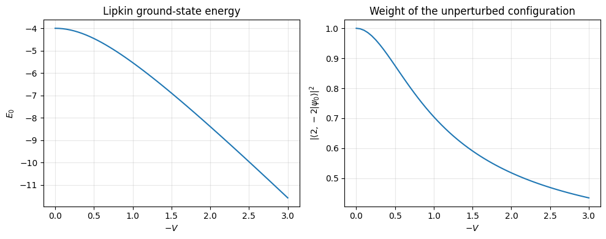
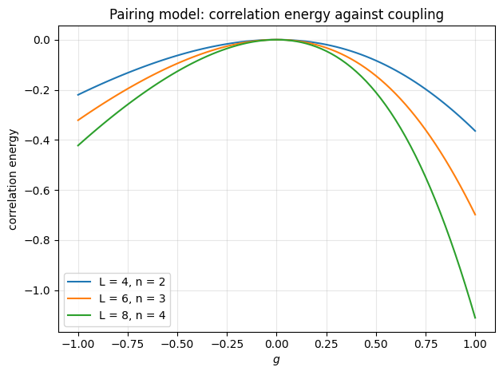
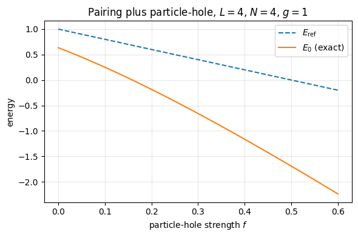
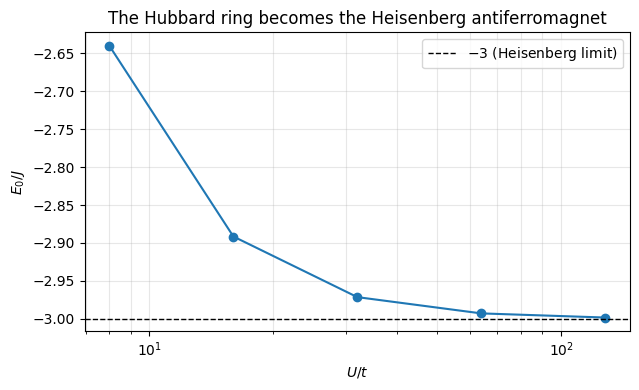
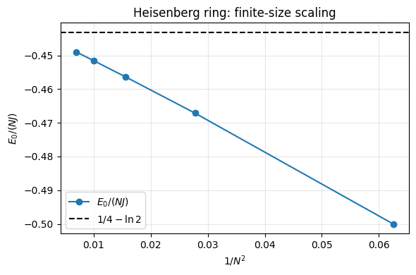

5. Physical systems and models#
Executable companion to chapter 4. Schematic models, each simple enough to solve exactly and each containing a genuine many-body mechanism:
Model |
Interaction |
Symmetry used |
|---|---|---|
Lipkin |
pair transfer + spin exchange |
\(SU(2)\) quasispin |
Pairing |
pair transfer |
\(S\), \(S_z\), seniority |
Pairing + particle-hole |
pair transfer + pair breaking |
\(S_z\) only |
Fermi-Hubbard |
on-site \(U\) |
\(N_\uparrow\), \(N_\downarrow\) |
Heisenberg |
nearest-neighbour exchange |
\(S^z_{\rm tot}\), \(SU(2)\) |
Calogero |
inverse square |
integrability |
Each is the general second-quantised Hamiltonian with a drastically restricted set of two-body matrix elements — the Heisenberg model after a Jordan-Wigner transformation. In every case a symmetry reduces the dimension of the problem to something we can diagonalise, which is why these are the benchmarks against which approximate methods are measured.
Two of the rows exist to be compared with their neighbours. The third row is the second with one extra term, and the price of that term is the loss of the seniority; the fifth row is the strong-coupling limit of the fourth, and we check that claim from both sides.
from itertools import combinations
import numpy as np
import matplotlib.pyplot as plt
np.set_printoptions(precision=6, suppress=True)
5.1. 1. The Lipkin model#
Two levels of degeneracy \(\Omega\), quantum numbers \(\sigma=\pm1\) and \(p=1,\dots,\Omega\). Because the interaction is completely degenerate in \(p\), the model has an \(SU(2)\) quasispin symmetry and the Hamiltonian collapses to
which is block diagonal in \(J\). For four particles the largest block is \(J=2\): a 70-dimensional problem becomes a \(5\times5\) matrix.
class LipkinModel:
"""The Lipkin model in one J block of the quasispin basis."""
def __init__(self, J=2.0, eps=2.0, V=-1/3, W=-1/4, N=None):
self.J, self.eps, self.V, self.W = J, eps, V, W
self.N = 2*J if N is None else N
self.jz = np.arange(-J, J + 1)
self.dim = len(self.jz)
@staticmethod
def _jplus(J, m):
"""<J,m+1| J_+ |J,m> = sqrt(J(J+1) - m(m+1))."""
v = J*(J + 1) - m*(m + 1)
return np.sqrt(v) if v > 0 else 0.0
def matrix(self):
J, dim = self.J, self.dim
H = np.zeros((dim, dim))
for a, m in enumerate(self.jz):
H[a, a] += self.eps*m # eps J_z
# J_+J_- + J_-J_+ = 2(J(J+1) - J_z^2), so this term is diagonal
H[a, a] += 0.5*self.W*(-self.N + 2*(J*(J+1) - m*m))
if a + 2 < dim: # (V/2)(J_+^2 + J_-^2)
e = 0.5*self.V*self._jplus(J, m)*self._jplus(J, m+1)
H[a+2, a] += e
H[a, a+2] += e
return H
for eps, V, W in ((2.0, -1/3, -1/4), (2.0, -4/3, -1.0)):
m = LipkinModel(J=2.0, eps=eps, V=V, W=W, N=4)
vals, vecs = np.linalg.eigh(m.matrix())
print(f"eps = {eps}, V = {V:+.4f}, W = {W:+.4f}")
print(" eigenvalues:", np.round(vals, 5))
psi = vecs[:, 0]
parts = [f"{abs(psi[k]):.5f}|2,{int(mm):+d}>"
for k, mm in enumerate(m.jz) if abs(psi[k]) > 1e-3]
print(f" E_0 = {vals[0]:.5f} " + " + ".join(parts))
print()
eps = 2.0, V = -0.3333, W = -0.2500
eigenvalues: [-4.21288 -2.98607 -0.91914 1.48607 4.13201]
E_0 = -4.21288 0.96735|2,-2> + 0.25221|2,+0> + 0.02507|2,+2>
eps = 2.0, V = -1.3333, W = -1.0000
eigenvalues: [-7.75122 -7.47214 -1.55581 1.47214 5.30704]
E_0 = -7.75122 0.64268|2,-2> + 0.73816|2,+0> + 0.20515|2,+2>
5.1.1. The single-configuration picture breaking down#
At weak coupling the unperturbed configuration \(|2,-2\rangle\) carries nearly all the probability and one Slater determinant suffices. As \(V\) grows, weight shifts to \(|2,0\rangle\) and no single determinant will do — the same story the occupation numbers of chapter 1 told, in a model small enough to see all of.
Vs = np.linspace(0.0, -3.0, 61)
E0, weight = [], []
for V in Vs:
m = LipkinModel(J=2.0, eps=2.0, V=V, W=-1/4, N=4)
vals, vecs = np.linalg.eigh(m.matrix())
E0.append(vals[0])
weight.append(vecs[0, 0]**2) # |<2,-2|psi_0>|^2
fig, ax = plt.subplots(1, 2, figsize=(10, 4))
ax[0].plot(-Vs, E0)
ax[0].set_xlabel("$-V$")
ax[0].set_ylabel("$E_0$")
ax[0].set_title("Lipkin ground-state energy")
ax[0].grid(alpha=0.3)
ax[1].plot(-Vs, weight)
ax[1].set_xlabel("$-V$")
ax[1].set_ylabel(r"$|\langle 2,-2|\psi_0\rangle|^2$")
ax[1].set_title("Weight of the unperturbed configuration")
ax[1].grid(alpha=0.3)
plt.tight_layout()
plt.show()

5.2. 2. The pairing model#
\(L\) doubly degenerate, equally spaced levels; the interaction destroys a pair in level \(q\) and creates one in level \(p\), and does nothing else:
Since the interaction never breaks a pair, the seniority-zero space — one basis state per choice of which levels carry a pair — is closed. Its dimension is \(\binom{L}{n}\) rather than \(\binom{2L}{2n}\): 6 instead of 28 for \(L=4\), \(n=2\); 924 instead of 2 704 156 for \(L=12\), \(n=6\).
class PairingModel:
"""The pairing model in the seniority-zero space."""
def __init__(self, levels=4, pairs=2, g=1.0, xi=1.0):
self.levels, self.pairs, self.g, self.xi = levels, pairs, g, xi
self.basis = list(combinations(range(1, levels + 1), pairs))
self.index = {c: i for i, c in enumerate(self.basis)}
self.dim = len(self.basis)
def matrix(self):
H = np.zeros((self.dim, self.dim))
for config, i in self.index.items():
occ = set(config)
H[i, i] += 2*self.xi*sum(p - 1 for p in config) # unperturbed
H[i, i] -= 0.5*self.g*self.pairs # p = q terms
for q in config: # move one pair
for p in range(1, self.levels + 1):
if p in occ:
continue
H[self.index[tuple(sorted(occ - {q} | {p}))], i] -= 0.5*self.g
return H
def ground_state_energy(self):
return float(np.linalg.eigvalsh(self.matrix())[0])
def reference_energy(self):
i = self.index[tuple(range(1, self.pairs + 1))]
return float(self.matrix()[i, i])
print(f"{'g':>7s} {'E_ref':>12s} {'E_0 (exact)':>14s} {'E_corr':>14s}")
for g in (-1.0, -0.5, 0.0, 0.5, 1.0):
m = PairingModel(levels=4, pairs=2, g=g)
print(f"{g:7.2f} {m.reference_energy():12.6f} "
f"{m.ground_state_energy():14.8f} "
f"{m.ground_state_energy()-m.reference_energy():14.8f}")
g E_ref E_0 (exact) E_corr
-1.00 3.000000 2.77987014 -0.22012986
-0.50 2.500000 2.43688426 -0.06311574
0.00 2.000000 2.00000000 0.00000000
0.50 1.500000 1.41677428 -0.08322572
1.00 1.000000 0.63554847 -0.36445153
gs = np.linspace(-1.0, 1.0, 81)
for L, n in ((4, 2), (6, 3), (8, 4)):
corr = [PairingModel(L, n, g).ground_state_energy()
- PairingModel(L, n, g).reference_energy() for g in gs]
plt.plot(gs, corr, label=f"L = {L}, n = {n}")
plt.xlabel("$g$")
plt.ylabel("correlation energy")
plt.title("Pairing model: correlation energy against coupling")
plt.grid(alpha=0.3)
plt.legend()
plt.tight_layout()
plt.show()

5.3. 3. Breaking the pairs: a particle-hole term#
The pairing interaction moves whole pairs and nothing else, so the seniority — the number of particles not part of a complete pair — is conserved and the whole calculation lives in the six-dimensional space above. That also means the particle-hole channel is empty: there is no matrix element between the reference determinant and any \(1p\)–\(1h\) state, and the Tamm-Dancoff and random-phase approximations have nothing to work with.
One extra term fixes that:
It creates a pair while removing two particles that need not be partners, so it breaks pairs. The seniority-zero basis is no longer closed and we have to work with all determinants at fixed \(S_z\): for \(L=4\), \(N=4\) that is 36 states instead of 6.
UP, DN = 0, 1
def orbital(level, spin):
return 2 * (level - 1) + spin
def level_of(o):
return o // 2 + 1
def _annihilate(state, o):
if not (state >> o) & 1:
return None, 0
sign = -1 if bin(state & ((1 << o) - 1)).count("1") & 1 else 1
return state & ~(1 << o), sign
def _create(state, o):
if (state >> o) & 1:
return None, 0
sign = -1 if bin(state & ((1 << o) - 1)).count("1") & 1 else 1
return state | (1 << o), sign
def apply_2body(state, i, j, k, l):
"""a^+_i a^+_j a_k a_l |state>, returning (new state, sign)."""
s, sgn = _annihilate(state, l)
if s is None:
return None, 0
s, t = _annihilate(s, k)
if s is None:
return None, 0
sgn *= t
s, t = _create(s, j)
if s is None:
return None, 0
sgn *= t
s, t = _create(s, i)
if s is None:
return None, 0
return s, sgn * t
class PairingPHModel:
"""Pairing plus a pair-breaking particle-hole term, in the S_z sector."""
def __init__(self, levels=4, particles=4, g=1.0, f=0.0, xi=1.0, sz2=0):
self.L, self.N, self.g, self.f, self.xi = levels, particles, g, f, xi
self.sz2 = sz2
self.states = self._basis()
self.index = {s: i for i, s in enumerate(self.states)}
self.dim = len(self.states)
def _basis(self):
out = []
for occ in combinations(range(2 * self.L), self.N):
n_up = sum(1 for o in occ if o % 2 == UP)
if self.sz2 is not None and n_up - (self.N - n_up) != self.sz2:
continue
bits = 0
for o in occ:
bits |= 1 << o
out.append(bits)
return sorted(out)
def matrix(self):
L = self.L
H = np.zeros((self.dim, self.dim))
for col, state in enumerate(self.states):
H[col, col] += sum(self.xi * (level_of(o) - 1)
for o in range(2 * L) if (state >> o) & 1)
for p in range(1, L + 1): # pairing
i, j = orbital(p, UP), orbital(p, DN)
for q in range(1, L + 1):
s, sgn = apply_2body(state, i, j,
orbital(q, DN), orbital(q, UP))
if s is not None and s in self.index:
H[self.index[s], col] += -0.5 * self.g * sgn
for p in range(1, L + 1): # particle-hole
i, j = orbital(p, UP), orbital(p, DN)
for q in range(1, L + 1):
for r in range(1, L + 1):
s, sgn = apply_2body(state, i, j,
orbital(q, DN), orbital(r, UP))
if s is not None and s in self.index:
H[self.index[s], col] += -0.5 * self.f * sgn
for p in range(1, L + 1): # and h.c.
k, l = orbital(p, DN), orbital(p, UP)
for q in range(1, L + 1):
for r in range(1, L + 1):
s, sgn = apply_2body(state, orbital(r, UP),
orbital(q, DN), k, l)
if s is not None and s in self.index:
H[self.index[s], col] += -0.5 * self.f * sgn
return H
def ground_state_energy(self):
return float(np.linalg.eigvalsh(self.matrix())[0])
def reference(self):
bits = 0
for p in range(1, self.N // 2 + 1):
bits |= 1 << orbital(p, UP)
bits |= 1 << orbital(p, DN)
return bits
def reference_energy(self):
i = self.index[self.reference()]
return float(self.matrix()[i, i])
def seniority(self, state):
return sum(((state >> orbital(p, UP)) & 1)
^ ((state >> orbital(p, DN)) & 1)
for p in range(1, self.L + 1))
def excitation_rank(self, state):
return bin(state ^ self.reference()).count("1") // 2
def couplings_to_reference(self):
column = self.matrix()[:, self.index[self.reference()]]
out = {}
for state, i in self.index.items():
if state == self.reference() or abs(column[i]) < 1e-14:
continue
out.setdefault((self.excitation_rank(state),
self.seniority(state)), []).append(float(column[i]))
return {k: out[k] for k in sorted(out)}
At \(f=0\) the 36-dimensional calculation must reproduce the six-dimensional one. That is the first thing to check.
print(f"{'g':>6s} {'seniority-zero':>16s} {'full S_z=0 space':>18s} {'diff':>10s}")
for g in (-1.0, -0.5, 0.0, 0.5, 1.0):
a = PairingModel(levels=4, pairs=2, g=g).ground_state_energy()
b = PairingPHModel(levels=4, particles=4, g=g, f=0.0).ground_state_energy()
print(f"{g:6.2f} {a:16.8f} {b:18.8f} {abs(a-b):10.1e}")
g seniority-zero full S_z=0 space diff
-1.00 2.77987014 2.77987014 0.0e+00
-0.50 2.43688426 2.43688426 0.0e+00
0.00 2.00000000 2.00000000 0.0e+00
0.50 1.41677428 1.41677428 0.0e+00
1.00 0.63554847 0.63554847 0.0e+00
5.3.1. Which determinants does the Hamiltonian reach?#
This is the content of the level-scheme figure in the chapter. We classify every determinant connected to the reference by excitation rank (\(1p\)–\(1h\), \(2p\)–\(2h\), …) and by seniority, and print the matrix element.
for f in (0.0, 0.05):
model = PairingPHModel(levels=4, particles=4, g=1.0, f=f)
print(f"g = 1, f = {f} (E_ref = {model.reference_energy():.4f})")
for (rank, seniority), values in model.couplings_to_reference().items():
unique = sorted({round(v, 8) for v in values})
print(f" {rank}p-{rank}h, seniority {seniority}: "
f"{len(values):2d} determinants, matrix elements {unique}")
print()
print("With f = 0 only the four seniority-zero 2p-2h determinants are")
print("connected, each by -g/2: those are whole pairs moved across the Fermi")
print("level. With f non-zero, eight 1p-1h and eight pair-breaking 2p-2h")
print("determinants join in at +/- f/2, and the seniority-zero element picks")
print("up g -> g + 2f.")
g = 1, f = 0.0 (E_ref = 1.0000)
2p-2h, seniority 0: 4 determinants, matrix elements [-0.5]
g = 1, f = 0.05 (E_ref = 0.9000)
1p-1h, seniority 2: 8 determinants, matrix elements [-0.025, 0.025]
2p-2h, seniority 0: 4 determinants, matrix elements [-0.55]
2p-2h, seniority 2: 8 determinants, matrix elements [-0.025, 0.025]
With f = 0 only the four seniority-zero 2p-2h determinants are
connected, each by -g/2: those are whole pairs moved across the Fermi
level. With f non-zero, eight 1p-1h and eight pair-breaking 2p-2h
determinants join in at +/- f/2, and the seniority-zero element picks
up g -> g + 2f.
fs = np.linspace(0.0, 0.6, 25)
energies = [PairingPHModel(levels=4, particles=4, g=1.0, f=f).ground_state_energy()
for f in fs]
references = [PairingPHModel(levels=4, particles=4, g=1.0, f=f).reference_energy()
for f in fs]
plt.figure(figsize=(6, 4))
plt.plot(fs, references, "--", label=r"$E_{\rm ref}$")
plt.plot(fs, energies, "-", label=r"$E_0$ (exact)")
plt.xlabel(r"particle-hole strength $f$")
plt.ylabel("energy")
plt.title(r"Pairing plus particle-hole, $L=4$, $N=4$, $g=1$")
plt.legend()
plt.grid(alpha=0.3)
plt.tight_layout()
plt.show()

5.4. 4. The Fermi-Hubbard model#
The Hamiltonian conserves \(N_\uparrow\) and \(N_\downarrow\) separately, and the hopping acts on the two species independently — so the kinetic part is \(K_\uparrow \otimes I + I \otimes K_\downarrow\), the tensor product of chapter 1 used in earnest, and the interaction is diagonal.
The fermionic sign is the Jordan-Wigner string: \(c^\dagger_i c_j\) picks up the parity of the occupied sites strictly between \(i\) and \(j\).
class HubbardChain:
"""The 1D Hubbard model in a fixed (N_up, N_down) sector."""
def __init__(self, sites=4, n_up=2, n_down=2, t=1.0, U=4.0, pbc=True):
self.n, self.t, self.U = sites, t, U
self.bonds = [(i, (i+1) % sites) for i in range(sites)]
if not pbc:
self.bonds = self.bonds[:-1]
self.up = self._states(n_up)
self.dn = self._states(n_down)
self.dim = len(self.up)*len(self.dn)
def _states(self, k):
out = []
for occ in combinations(range(self.n), k):
bits = 0
for s in occ:
bits |= 1 << s
out.append(bits)
return sorted(out)
def _hopping(self, states):
idx = {s: i for i, s in enumerate(states)}
K = np.zeros((len(states), len(states)))
for s in states:
for (i, j) in self.bonds:
for (c, d) in ((i, j), (j, i)): # c^+_c c_d
if not (s >> d) & 1 or (s >> c) & 1:
continue
lo, hi = min(c, d), max(c, d) # Jordan-Wigner sign
mask = ((1 << hi) - 1) ^ ((1 << (lo+1)) - 1)
sign = (-1)**bin(s & mask).count("1")
K[idx[(s ^ (1 << d)) | (1 << c)], idx[s]] += -self.t*sign
return K
def _double(self):
return np.array([[bin(u & d).count("1") for d in self.dn]
for u in self.up]).ravel().astype(float)
def matrix(self):
Ku, Kd = self._hopping(self.up), self._hopping(self.dn)
H = np.kron(Ku, np.eye(len(self.dn))) + np.kron(np.eye(len(self.up)), Kd)
return H + self.U*np.diag(self._double())
def ground(self):
vals, vecs = np.linalg.eigh(self.matrix())
psi = vecs[:, 0]
return float(vals[0]), float(psi @ (self._double()*psi))
print(f"{'U/t':>6s} {'dim':>6s} {'E_0/t':>14s} {'double occ.':>13s}")
for U in (0.0, 2.0, 4.0, 8.0, 16.0):
m = HubbardChain(sites=4, n_up=2, n_down=2, U=U)
e0, docc = m.ground()
print(f"{U:6.1f} {m.dim:6d} {e0:14.8f} {docc:13.6f}")
print("\nAt U = 0 the exact free-fermion result is -4t: the single-particle")
print("energies are -2t cos k with k = 0, +/- pi/2, pi.")
U/t dim E_0/t double occ.
0.0 36 -4.00000000 1.000000
2.0 36 -2.82842712 0.453082
4.0 36 -2.10274848 0.287325
8.0 36 -1.32023496 0.129992
16.0 36 -0.72286432 0.042033
At U = 0 the exact free-fermion result is -4t: the single-particle
energies are -2t cos k with k = 0, +/- pi/2, pi.
5.4.1. Strong coupling: the Heisenberg limit#
For \(U \gg t\) the doubly occupied states are eliminated perturbatively and what remains is
For the four-site ring the Heisenberg part gives \(-2J\) and the constant term on four bonds gives \(-J\), so \(E_0/J \to -3\). This is a real prediction, and the numbers confirm it.
print(f"{'U/t':>7s} {'E_0/t':>16s} {'J = 4t^2/U':>13s} {'E_0/J':>10s}")
Us = [8.0, 16.0, 32.0, 64.0, 128.0]
ratios = []
for U in Us:
e0, _ = HubbardChain(sites=4, n_up=2, n_down=2, U=U).ground()
J = 4.0/U
ratios.append(e0/J)
print(f"{U:7.1f} {e0:16.10f} {J:13.8f} {e0/J:10.5f}")
plt.figure(figsize=(6.5, 4))
plt.semilogx(Us, ratios, "o-")
plt.axhline(-3.0, color="k", ls="--", lw=1, label="$-3$ (Heisenberg limit)")
plt.xlabel("$U/t$")
plt.ylabel("$E_0 / J$")
plt.title("The Hubbard ring becomes the Heisenberg antiferromagnet")
plt.grid(alpha=0.3, which="both")
plt.legend()
plt.tight_layout()
plt.show()
U/t E_0/t J = 4t^2/U E_0/J
8.0 -1.3202349583 0.50000000 -2.64047
16.0 -0.7228643224 0.25000000 -2.89146
32.0 -0.3714104223 0.12500000 -2.97128
64.0 -0.1870445461 0.06250000 -2.99271
128.0 -0.0936928521 0.03125000 -2.99817

5.5. 5. The quantum Heisenberg model#
The strong-coupling limit above is a model in its own right,
Spin operators on different sites commute, so — unlike every fermionic model in this notebook — there is no Jordan-Wigner string and no sign to track. The total magnetisation is conserved, and the ground state of the antiferromagnet lives in the \(S^z_{\rm tot}=0\) sector.
class HeisenbergChain:
"""Spin-1/2 Heisenberg model on a ring, in a fixed magnetisation sector."""
def __init__(self, sites=4, J=1.0, h=0.0, pbc=True, magnetisation=0):
self.n, self.J, self.h = sites, J, h
self.magnetisation = magnetisation
bonds = [(i, (i + 1) % sites) for i in range(sites)]
if not pbc:
bonds = bonds[:-1]
seen, self.bonds = set(), []
for i, j in bonds: # a two-site ring has one bond
if i == j or frozenset((i, j)) in seen:
continue
seen.add(frozenset((i, j)))
self.bonds.append((i, j))
self.states = [s for s in range(1 << sites)
if magnetisation is None
or 2 * bin(s).count("1") - sites == magnetisation]
self.index = {s: i for i, s in enumerate(self.states)}
self.dim = len(self.states)
def matrix(self):
H = np.zeros((self.dim, self.dim))
for state, col in self.index.items():
H[col, col] -= self.h * 0.5 * (2 * bin(state).count("1") - self.n)
for i, j in self.bonds:
si, sj = (state >> i) & 1, (state >> j) & 1
H[col, col] += self.J * (0.25 if si == sj else -0.25)
if si != sj:
flipped = state ^ (1 << i) ^ (1 << j)
H[self.index[flipped], col] += 0.5 * self.J
return H
def ground_state_energy(self):
return float(np.linalg.eigvalsh(self.matrix())[0])
def ground_state(self):
return np.linalg.eigh(self.matrix())[1][:, 0]
def correlation(self, i, j):
"""<S_i . S_j> in the ground state."""
if i == j:
return 0.75
psi = self.ground_state()
total = 0.0
for state, col in self.index.items():
si, sj = (state >> i) & 1, (state >> j) & 1
total += psi[col] ** 2 * (0.25 if si == sj else -0.25)
if si != sj:
flipped = state ^ (1 << i) ^ (1 << j)
total += 0.5 * psi[self.index[flipped]] * psi[col]
return float(total)
BETHE = 0.25 - np.log(2.0) # J (1/4 - ln 2), the infinite chain
print(f"Bethe-ansatz energy per site: {BETHE:.10f}")
Bethe-ansatz energy per site: -0.4431471806
5.5.1. Checking the mapping from the Hubbard model#
The chapter predicted \(E_0 \to -3J\) for the four-site Hubbard ring: \(-2J\) from the exchange and \(-J\) from the constant \(-\tfrac14 n_i n_j\) term on four bonds. We can now check the two halves separately — the Heisenberg ring alone should give exactly \(-2J\).
ring = HeisenbergChain(sites=4, J=1.0)
print(f"Heisenberg four-site ring: E_0 = {ring.ground_state_energy():+.8f} J")
print(f" <S_i.S_(i+1)> = {ring.correlation(0, 1):+.8f}")
print(f" <S_i.S_(i+2)> = {ring.correlation(0, 2):+.8f}")
print()
print(f"{'U/t':>6s} {'E_0(Hubbard)/J':>16s} {'+1':>10s}")
for U in (8.0, 16.0, 32.0, 64.0, 128.0):
e0, _ = HubbardChain(sites=4, n_up=2, n_down=2, t=1.0, U=U).ground()
J = 4.0 / U
print(f"{U:6.1f} {e0/J:16.6f} {e0/J + 1:10.6f}")
print("-> -2, the Heisenberg energy of the same ring.")
Heisenberg four-site ring: E_0 = -2.00000000 J
<S_i.S_(i+1)> = -0.50000000
<S_i.S_(i+2)> = +0.25000000
U/t E_0(Hubbard)/J +1
8.0 -2.640470 -1.640470
16.0 -2.891457 -1.891457
32.0 -2.971283 -1.971283
64.0 -2.992713 -1.992713
128.0 -2.998171 -1.998171
-> -2, the Heisenberg energy of the same ring.
5.5.2. Finite-size scaling against the Bethe ansatz#
The infinite antiferromagnetic chain has \(E_0/(NJ) = \tfrac14 - \ln 2\). Finite rings approach it from below, and slowly: the deviation falls off as \(1/N^2\).
sizes, per_site = [], []
print(f"{'N':>4s} {'dim':>8s} {'E_0/J':>14s} {'E_0/(NJ)':>13s} {'deviation':>12s}")
for n in (4, 6, 8, 10, 12):
chain = HeisenbergChain(sites=n, J=1.0)
e0 = chain.ground_state_energy()
sizes.append(n)
per_site.append(e0 / n)
print(f"{n:4d} {chain.dim:8d} {e0:14.8f} {e0/n:13.8f} {e0/n - BETHE:+12.6f}")
print(f"{'inf':>4s} {'--':>8s} {'--':>14s} {BETHE:13.8f} {0.0:+12.6f}")
plt.figure(figsize=(6, 4))
inverse = [1.0 / n**2 for n in sizes]
plt.plot(inverse, per_site, "o-", label=r"$E_0/(NJ)$")
plt.axhline(BETHE, ls="--", color="k", label=r"$1/4-\ln 2$")
plt.xlabel(r"$1/N^2$")
plt.ylabel(r"$E_0/(NJ)$")
plt.title("Heisenberg ring: finite-size scaling")
plt.legend()
plt.grid(alpha=0.3)
plt.tight_layout()
plt.show()
N dim E_0/J E_0/(NJ) deviation
4 6 -2.00000000 -0.50000000 -0.056853
6 20 -2.80277564 -0.46712927 -0.023982
8 70 -3.65109341 -0.45638668 -0.013239
10 252 -4.51544635 -0.45154464 -0.008397
12 924 -5.38739092 -0.44894924 -0.005802
inf -- -- -0.44314718 +0.000000

5.5.3. Back to fermions: the Jordan-Wigner transformation#
With \(\hat S^+_j = c^\dagger_j\prod_{k<j}(1-2\hat n_k)\) and \(\hat S^z_j = \hat n_j - \tfrac12\), the strings cancel between the two sites of a nearest-neighbour bond and the chain becomes
a hopping term plus a nearest-neighbour density-density interaction. Building that fermionic Hamiltonian directly, with the signs put in by hand, must give the same spectrum — not merely the same ground-state energy.
def jordan_wigner_chain(sites, J=1.0):
"""The open Heisenberg chain as spinless fermions, signs included."""
dim = 1 << sites
H = np.zeros((dim, dim))
for state in range(dim):
for j in range(sites - 1):
n_j, n_k = (state >> j) & 1, (state >> (j + 1)) & 1
H[state, state] += J * (n_j - 0.5) * (n_k - 0.5)
for a, b in ((j, j + 1), (j + 1, j)): # c^+_a c_b
if not (state >> b) & 1 or (state >> a) & 1:
continue
mid = state & ~(1 << b)
sign = (-1) ** bin(mid & ((1 << b) - 1)).count("1")
sign *= (-1) ** bin(mid & ((1 << a) - 1)).count("1")
H[mid | (1 << a), state] += 0.5 * J * sign
return H
print(f"{'N':>4s} {'E_0 (spins)':>16s} {'E_0 (fermions)':>16s} {'spectra agree':>15s}")
for n in (4, 6, 8, 10):
spins = HeisenbergChain(sites=n, J=1.0, pbc=False,
magnetisation=None).matrix()
a = np.sort(np.linalg.eigvalsh(spins))
b = np.sort(np.linalg.eigvalsh(jordan_wigner_chain(n)))
print(f"{n:4d} {a[0]:16.10f} {b[0]:16.10f} "
f"{str(bool(np.allclose(a, b))):>15s}")
N E_0 (spins) E_0 (fermions) spectra agree
4 -1.6160254038 -1.6160254038 True
6 -2.4935771339 -2.4935771339 True
8 -3.3749325987 -3.3749325987 True
10 -4.2580352073 -4.2580352073 True
5.6. 6. The Calogero model#
Unlike the first three, this one is solvable for any \(N\). The ground state is a pure Jastrow function,
At \(\lambda = 1\) the coupling vanishes and the Jastrow factor becomes the Vandermonde determinant — the Slater determinant of free fermions.
def calogero_energy(N, lam, omega=1.0):
return omega*(0.5*N + 0.5*lam*N*(N - 1))
print("At lambda = 1 the energy must equal the sum of the N lowest")
print("oscillator levels, since the ground state is the free-fermion")
print("Slater determinant:\n")
print(f"{'N':>4s} {'E_0(lambda=1)':>16s} {'sum (n+1/2)':>14s}")
for N in (2, 3, 5, 10):
print(f"{N:4d} {calogero_energy(N, 1.0):16.4f} "
f"{sum(n + 0.5 for n in range(N)):14.4f}")
At lambda = 1 the energy must equal the sum of the N lowest
oscillator levels, since the ground state is the free-fermion
Slater determinant:
N E_0(lambda=1) sum (n+1/2)
2 2.0000 2.0000
3 4.5000 4.5000
5 12.5000 12.5000
10 50.0000 50.0000
5.6.1. A numerical check for two particles#
With \(x = x_1 - x_2\) the relative motion separates,
whose exact ground-state energy is \(\omega(\lambda + \tfrac12)\). We solve it on a grid with the machinery of chapter 1. The inverse-square barrier keeps the wave function away from the origin, so the boundary condition is automatic.
def relative_energy(lam, omega=1.0, n_grid=4000, rmax=12.0):
x, h = np.linspace(0.0, rmax, n_grid + 2, retstep=True)
x = x[1:-1] # interior points
diag = 2/h**2 + 0.25*omega**2*x**2 + lam*(lam - 1)/x**2
off = np.full(len(x) - 1, -1/h**2)
H = np.diag(diag) + np.diag(off, 1) + np.diag(off, -1)
return float(np.linalg.eigvalsh(H)[0])
print(f"{'lambda':>8s} {'numerical':>14s} {'exact':>14s} {'error':>12s}")
for lam in (1.0, 1.5, 2.0, 3.0):
num, exact = relative_energy(lam), lam + 0.5
print(f"{lam:8.1f} {num:14.8f} {exact:14.8f} {abs(num-exact):12.2e}")
lambda numerical exact error
1.0 1.49999930 1.50000000 7.03e-07
1.5 1.99999762 2.00000000 2.38e-06
2.0 2.49999911 2.50000000 8.90e-07
3.0 3.49999930 3.50000000 7.03e-07
5.7. What these models have in common#
In every case the route is the same: write the Hamiltonian in second quantisation, find the operators that commute with it, use them to block diagonalise, and solve the blocks. The first step is chapter 3, the second is a commutator calculation that Wick’s theorem makes routine, the third is the statement that a symmetry gives a basis in which the matrix is block diagonal, and the fourth is the eigenvalue problem of chapter 1.
The pairing model with and without its particle-hole term shows what happens when a symmetry is taken away: the same physical system, one extra term, and the dimension of the ground-state calculation goes from six to thirty-six. That is the general pattern in miniature.
What separates these models from a realistic system is only the last step of the reduction. In a real nucleus or molecule the symmetries reduce the dimension by orders of magnitude but not to five; the matrix is sparse but enormous; and one must fall back on the approximate methods that occupy the rest of the book. The value of the models here is that they let us watch those approximations succeed and fail against an answer we already know.